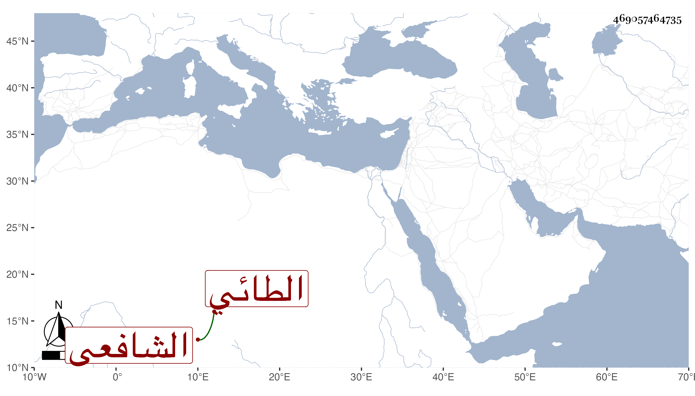

0902Sakhawi.DawLamic.ITO20230111-ara1.EIS1600.469057464735
Biography ID: 469057464735
621
محمد بن سعد بن محمد بن علي بن عثمان بن إسماعيل الشمس الطائي الشافعي والد العلاء الماضي ويعرف بخطيب الناصرية ، ذكره شيخنا في معجمه وقال : إنه ولد سنة ثلاث وأربعين وسبعمائة وتفقه بعد أن حفظ التنبيه على أبي الحسن علي البابي والكمال عمر بن العجمي والجمال بن الحكم التيزيني وسمع الحديث من البدر بن حبيب وغيره وولي خطابة الناصرية حتى مات واشتهر بها ، وكان كثير التلاوة والعبادة سليم الصدر . مات في جمادى الأولى سنة ست رحمه الله .
